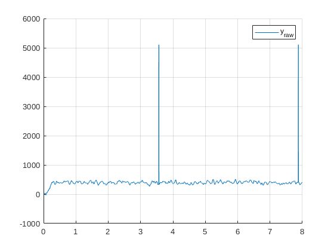
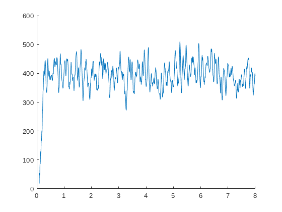

Contents
Assignment 1
clear; clc; fs = 44; % Hz dt = 1/fs; t_gen = 0:dt:8-dt; % Need different t vector for u because U gives different length y. u =7*uGen(t_gen, "step",1,9); % unit step input for system analysis % Persistently exciting input signal (generated from unit step ut) U = genU(u); % works only for unit step input yraw = exciteSystem(5360188, U, fs); t = 0:dt/(countZeros(u)+1):(8)-dt/(countZeros(u)+1); % time vector for U % The peak time is at .87 seconds and the signal starts rising after a % delay of .45 seconds. This means that the rise time is about .42 seconds. % An appropriate sample rate would be to have 8 or 9 samples in this time period. % So the sample time interval shoud be .42/9=.0467 seconds. i.e. a sampling % frequency of 22Hz when rounded up. In hindsight, an announcement was made % that the signal generation process is correllated to the sampling % frequency and the we were allowed to eyeball a good frequency. Double the % found frequency (44Hz) gives a nice workable result. % the peak of the rise after a time delay was determined to be ca. .8 % seconds. This time was multiplied by 10 and taken as an appropriate % duation for the simulation. figure(1); clf; hold on; grid on; plot(t,yraw) legend("y_{raw}") y = despike(yraw,10000,fs); % Desipike output % The signal was despiked by means of, first, flatlining the spikes, and % then intepolating between the beginning of the flatline and the first % value after the flatline. The decision to first flatline the spike was % made because this process determines the width of the spike (it is not % nescicarily 1 extreme measurement). Then this flatline was an easy % criterion to determine the area that needs to be interpolated over. The % interpolation was done linearly. figure(2) clf; grid on; plot(t,y)
Timeshift
y = timeshift(y,500,fs); cutoff = length(yraw)-length(y); t_shifted = t(cutoff+1:end); clear cutoff; % The time shifting was performed looking at the slope of the output % signal. This cuts off any part of the signal where the slope reaches 500, % but only is the signal value at that point is equal or greater than 0. figure(3) clf; hold on; plot(t_shifted,y) y = DCoffset(y); % removes DC Offset figure(4) clf; hold on; plot(t_shifted,y) % Linearity Check table = []; fprintf("%0s | %10s \n","Input gain","IO gain") for i = 1:10 % determine io gain for input gain 1 till 20 ut =i*uGen(t_gen, "step",1,9); % Persistently exciting input signal Ut = genU(ut); % works only for unit step input yt = exciteSystem(5360188, Ut, fs); iogain = IOgain(ut,yt,fs); fprintf("%-10.0i | %2.3f \n", ut(end), iogain) end clear ut Ut table; % The table below shows IO gains for a varyety of input gains. The IO gains % seems constant by aproximation, which indicates linearit of the system. % The system roughly behaves as: y*Igain=IOgain*u*Igain --> y=IOgain*u. I.E % scaling the input gain scales the output gain with the same factor, % resulting in a roughly constant IO gain of ca. 58.
Input gain | IO gain 1 | 61.020 2 | 59.079 3 | 57.376 4 | 57.971 5 | 58.670 6 | 58.713 7 | 58.022 8 | 57.928 9 | 58.140 10 | 57.738
PRBS Input and preprocessing Data for assignment 2
clc; close all; % Now in order to do system identification we need training data and % validation data. We will generate these using different types of signals. % The training data will be generated using a Pseudo Random Binary Sequence (prbs). The % validation data will the data generated with a step function, like % before. fs = 100; %Hz dur = 10; t = 0:(1/fs):dur-(1/fs); u_t = 35*prbs(length(t),0.5); y_t = exciteSystem(5360188,u_t,fs); y_t = despike(y_t,80000,fs); y_t = timeshift(y_t,4000,fs); y_t = DCoffset(y_t); a = length(u_t)-length(y_t); u_t = u_t(1:end-a); t2 = t(length(t)-length(y_t)+1:end); figure(5) clf; hold on; plot(t2,y_t)
Assignment 2
%Since we cannot use a white-noise sequence as an input signal, the %identification methods that can be used are PI-MOESP and PO-MOESP. We will %use PO-MOESP here. method = 'po-moesp'; %To determine the order, we look for a gap between a set of dominant sin- %gular values that correspond to the dynamics of the system and a set %of small singular values due to the noise. n = 1;%non-zero singular values s = 100; % subspaceID runs into a problem, because the timeshifted output is no % longer the same length as the input. Even though there is a delayed % response, the output signal was originally the same length as the input % signal. This means that the end of the input signal was partially not % accounted for in the output. to solve this, the amount of measurements % that were cut off at the beginning of the output will also be cut off at % the end of the input. [A,B,C,D,x0,sv] = subspaceID(u_t,y_t,s,n,method); figure(6) semilogy(sv,'.')
Functions
function u = uGen(time,type, amp, periods) % generate inputs dt = time(2)-time(1); if type=="step" % gen step with periods as prior zeros u = [zeros(periods,1) ; ones(length(time)-periods,1)]*amp; elseif type == "pulse" u = [1 ; zeros(length(time)-1,1)]; elseif type == "sine" u = amp*sin(periods*time*2*pi/(dt*length(time))); else u = "Unknown input type"; end end function u = prbs(N,rate) % wrote own prbs because not allowed to use SI toolbox if rate>0 && rate<1 du = floor(rand(N,1)+rate); u = rem(cumsum(du),2); else u = 'prbs(N,rate) | Error: Pick a rate between 0 and 1 \n'; fprintf(u); end end function z = countZeros(u) % counts zeros before unit step z = 0; while u(z+1)==0 z=z+1; end end function U = genU(u) % Generates Persistently exciting unit step z = countZeros(u); rank = z+1; % for unit step input gain = max(u); % same input gain as 1D signal U = gain*ones(rank,length(u)); U(1,:) = u'; % first row equals 1D signal for i=2:rank % Do bitshift operation (1 to the left) for all other rows with % respect to previous row. U(i,:) = [u(i:end)' gain*ones(1,i-1)]; end end function y = interp(sig) % Interpolates flatlines signal until not flatlined anymore and appends % anything that comes after it. Start at flatline, will not influence % other flatlines done = false; i = 2; while ~done if ~(sig(i) == sig(1)) % if no longer flatlined dy = sig(i)-sig(1); % determine slope dx = i; for j=2:i-1 % for flatline sig(j) = sig(j-1)+dy/dx; % linear interpolation end done = true; end i = i+1; % look further if still at flatline end y = sig; % return end function y = despike(sig,slope,fs) % removes spikes by flatlining and then interpolating over flatline spikes = []; % to stare spike starts for i = 2:length(sig) if fs*(sig(i)-sig(i-1))>slope % check slope criterion sig(i) = sig(i-1); % flatline spike % only save start of identified spike if ~(ismember(i-3,spikes)) && ~(ismember(i-2,spikes)) spikes = [spikes i-1]; end end end for i = 1:length(spikes) % interpolate over spikes and prepend prior data sig = [sig(1:spikes(i)-1) ; interp(sig(spikes(i):end))]; end y =sig; % return end function y = timeshift(sig,slope,fs) % removes any data before certain slope is achieved at y>=0 i = 2; done = false; while ~done % while no delayed respones identified if fs*(sig(i)-sig(i-1))>slope && sig(i-1)>=0 % if high and steep enough sig = sig(i-1:end); % remove prior data done = true; % don't run while loop again end i = i+1; end y =sig; % return end function y = DCoffset(y) % removes constant offset to (ignores signal rise) done = false; i=2; while ~done % find fitst peak after rise if y(i) > y(i-1) && y(i) > y(i+1) && y(i) >400 sig = y(i:end); % look only after this peak done = true; end i = i+1; end DC = mean(sig); % remove mean after this peak from signal y = y-DC; end function g = IOgain(u,y,fs) % determines IO gain y = despike(y,10000,fs); y = timeshift(y,500,fs); g = mean(y)/mean(u); end